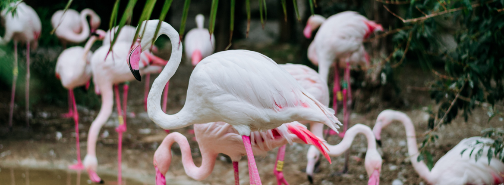

Птицы в family ZOO
Розовый фламинго
Розовый фламинго наименее «розовый» среди всех представителей семейства[5], его оперение заметно бледнее, чем у красного фламинго. Голова, шея и тело у взрослого розового фламинго розовато-белые, а у красного фламинго — розовато-красные[3], маховые перья чёрные[4]. Бледно-розовые кроющие перья у розового фламинго не свисают так сильно по бокам, как у красного. Наиболее интенсивным цветом отличаются крылья; глубоко малиновый цвет (пурпурно-красный[4]) почти не заметен под опущенными кроющими перьями, его можно увидеть только наблюдая птицу в полёте[5]. По описанию советского орнитолога Александра Чельцова-Бебутова, обнаружившего одну из гнездовых колоний в Казахстане, «временами казалось, что полнеба занято живыми бело-розовыми облаками, живописно освещавшимися косыми лучами заходящего солнца» Яркая окраска оперения фламинго обусловлена каротиноидами[7][8], получаемыми с кормом. Они быстро разрушаются на свету, и в условиях искусственного содержания, если птиц не кормить продуктами, содержащими эти пигменты, они быстро теряют оттенки розового, становясь полностью белыми[9]. Основным пигментом у всех фламинговых является кантаксантин[10]. Линька у всех представителей семейства очень нерегулярна[9], после неё пигмент также разрушается и перья быстро теряют свой цвет. У розового фламинго цвет оперения между линьками поддерживается за счёт секрета копчиковой железы, содержащей кантаксантин, который птицы наносят на перья шеи, груди и спины, предварительно натерев им щёки непосредственно о копчиковую железу. Максимальная концентрация каротиноидов в секрете приходится на брачный период. Наиболее яркие фламинго разбиваются на пары раньше, чем их менее яркие сородичи[8]. Во время чистки перьев розовые фламинго одинаково часто двигают как надклювьем, так и подклювьем, предпочитая двигать той челюстью, которая находится ниже в конкретный момент времени[11]. Оперение молодых птиц серо-коричневое с розовыми отметинами на крыльях, хвосте и в нижней части. Ноги, перепончатые лапы и клюв коричневые[3]. Взрослое оперение птицы приобретают к трём годам[3][4]. Все фламинго обладают сильно изогнутым массивным клювом[12]. Огромный клюв розового фламинго лёг в основу арабского названия вида, которое переводится как «верблюд моря»[13]. По данным исследований Пенелопы Дженкин, полная длина клюва по прямой составляет 11,4—13,2 см, а длина от точки перегиба до кончика клюва — 8,2 см. По материалам более ранних исследований, длина клюва может составлять 14,2 см, или 12,0—13,5 см, но в документации не уточняется, каким образом проводились измерения[14]. Как и у остальных фламинговых, кончик клюва розового фламинго чёрный, в то время как остальной клюв розовый[3][5]. У красного фламинго клюв розовато-красный, а кончик клюва чернее[3]. Радужка глаза бледно-жёлтая[5]. Уздечка и кольцо вокруг глаза красные, неоперённые[4].